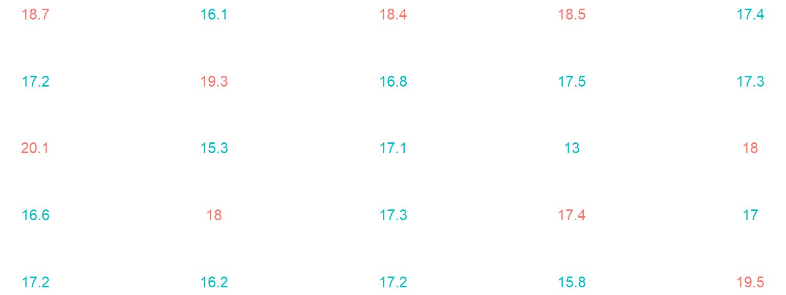
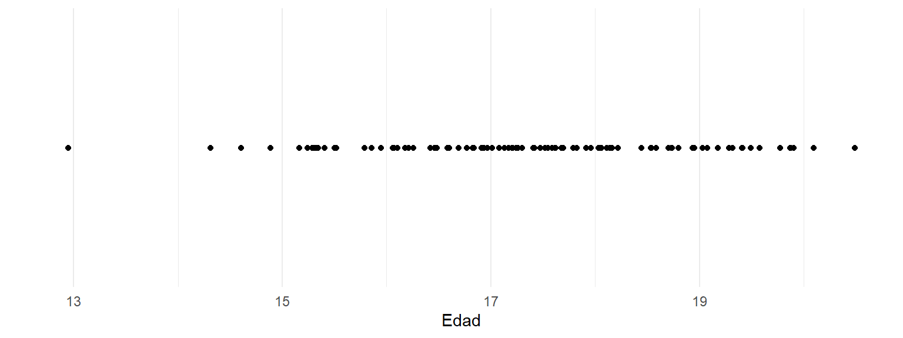
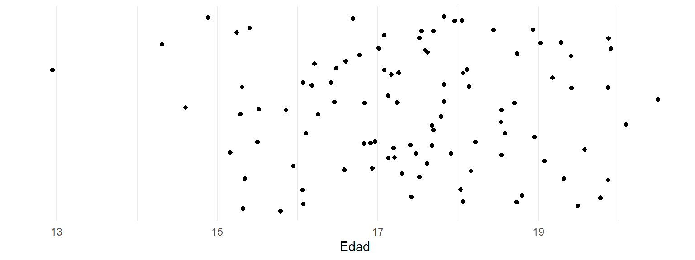
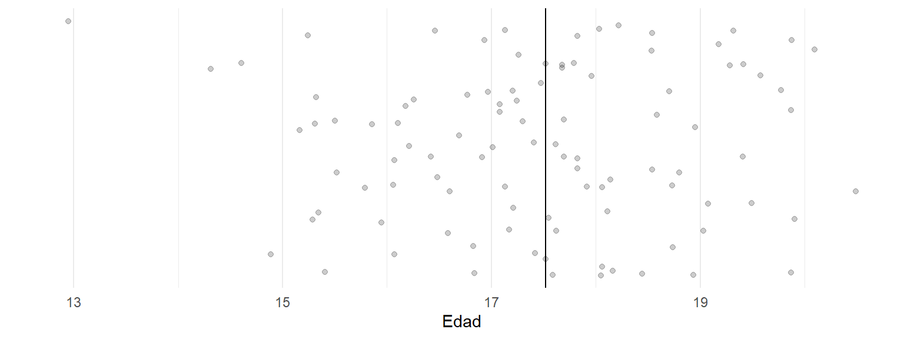
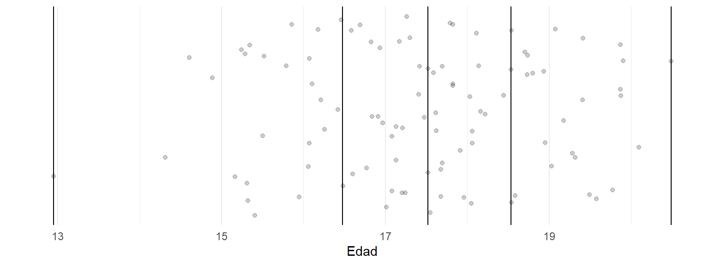
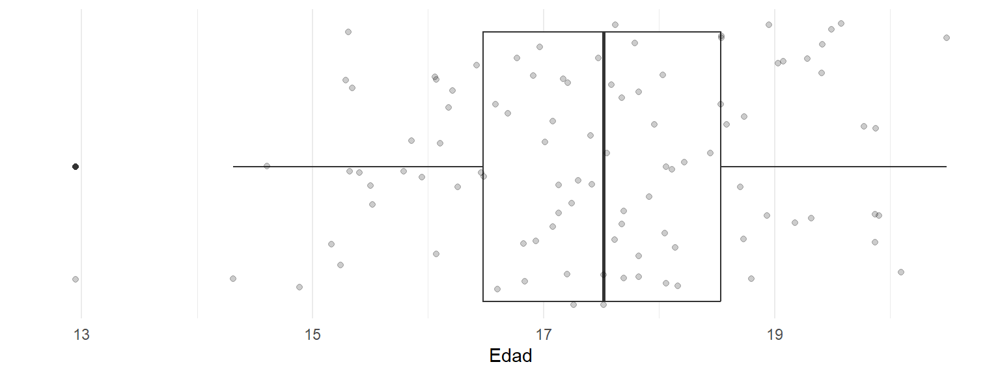
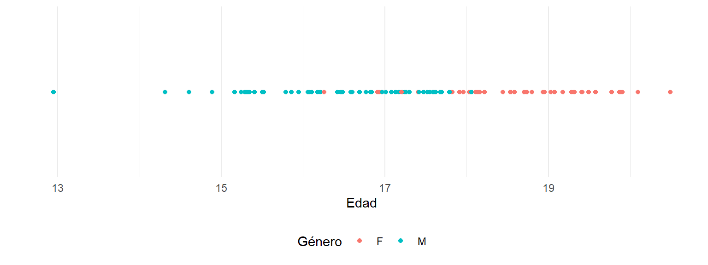
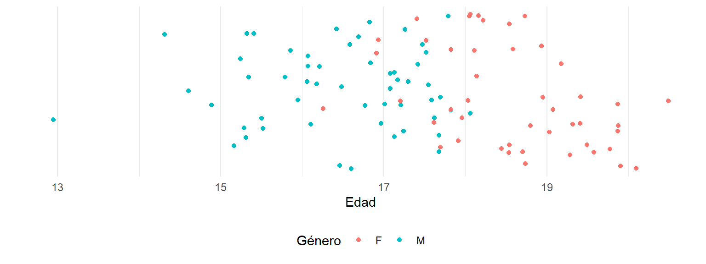
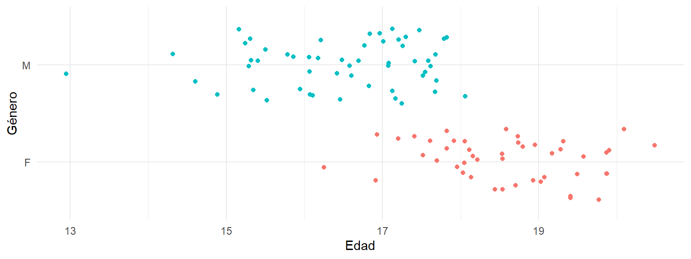
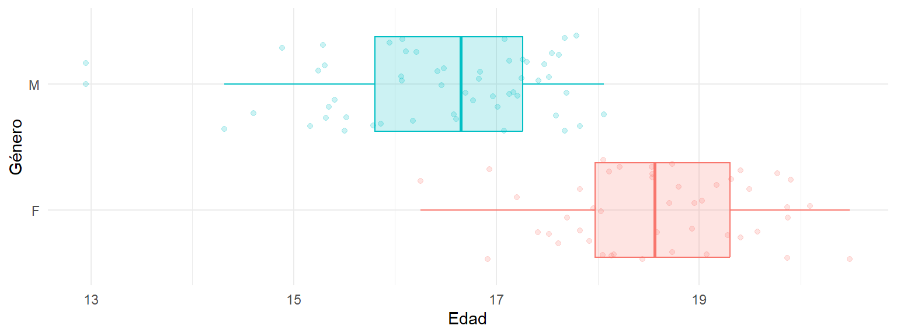

Introducción
Introducción al mundo cuantitativo
Preámbulo
Expectativas
Problemas que vamos a tener cuando seamos grandes.
Excel
Datos grandes.
Ir a ciegas con un análisis de datos.
No saber el idioma de los datos.
No entender un modelo
La medición de los humanos
Información
¿Por qué queremos procesar información?
¿Existe la verdad?
¿Cómo se trata la verdad en la modernidad?
¿Cómo se trata la verdad en la postmodernidad?
¿Qué es la información?
¿Queremos ciencias políticas o políticas científicas?
¿Qué es un modelo científico?
Escenarios de datos
¿Qué son los datos?
¿Qué son las variables?
¿Qué son los individuos?
Primera actividad: ¿Cómo son los datos?
En muchos contextos el tema de los datos implica programación. Esto genera una impresión lejana en el ámbito de las ciencias sociales. La creación de brechas tecnológicas aleja al científico social del análisis de datos.
Es normal tener una resistencia en el desarrollo de competencias cuantitativas. Las metodologías de análisis de información conducen a lo cuantitativo de manera inevitable. El desarrollo de las habilidades no solo es indispensable para la investigación, sino para la vida profesional.
El acercamiento del científico social a lo cuantitativo comprende el uso de herramientas muy básicas.
La reconceptualización del trabajo con datos resulta necesaria.
Podemos ver los datos como puntos en el eje de la edad.

Podemos diseminarlos verticalmente para verlos mejor.

Podemos trazar líneas imaginarias para dividirlos en partes iguales.

Usando más líneas imaginarias podemos dividirlos en cuatro partes iguales.

Conformamos un gráfico de caja y bigotes.

Iniciamos de nuevo, desde el principio añadiendo el color del género.

Añadiendo espacio vertical se visualiza una tendencia.

Organizamos los datos verticalemnte por género.

Una caja para cada género es lo apropiado. ¿Podemos ver ahora la tendencia?

Tipos de datos
Tendencias
El análisis de datos no genera afirmaciones individuales. Se identifican comportamientos globales en torno a un fenómeno, que no corresponden al comportamiento de los individuos de manera puntual. Las tendencias son comportamientos globales, que los individuos acatan probablemente.
Individuos
Son unidades de análisis sobre las cuales vamos a generar un modelo. Son el sujeto de nuestra teoría.
Variables
Una variable es una característica observable o medible de un individuo, que se describe acorde a una escala de medición bien definida. Cada rasgo, aspecto o característica de una población constituye una variable.
Tipos de variable
Variables categóricas
Variables numéricas
Variables temporales
Variables categóricas
Las variables cualitativas son aquellas que se expresan en forma verbal como categorías o atributos. El género, la afiliación política, la nacionalidad y la profesión son ejemplos de variables cualitativas.
Variables numéricas
Las variables cuantitativas son aquellas que varían en términos de cantidad y se registran o expresan en forma numérica. La edad, el peso, la estatura, la temperatura y el salario son ejemplos de variables cuantitativas. A su vez, estas variables se clasifican como sigue:
Variables discretas: no admiten siempre un valor intermedio entre dos valores cualesquiera de la variable. Por ejemplo, el número de hijos de una persona es una variable cuantitativa discreta.
Variables continuas: siempre admiten un valor intermedio entre dos valores cualesquiera de la variable. Por ejemplo, el salario de un empleado medido en millones de pesos es una variable cuantitativa continua.
Medición
La medición es un proceso mediante el cual se asignan valores cuantitativos o cualitativos a los atributos de los elementos objeto de estudio, de acuerdo a unas reglas claramente preestablecidas.
Escalas de medición
Una escala de medición es un esquema específico para asignar símbolos o números con el objeto de designar los valores de una variable.
- Nominal
- Ordinal
- Intervalo
- Razón
Escalas categóricas
Escala nominal: La escala nominal es aquella donde se clasifican los individuos en categorías distintas. Consiste en agrupar los individuos de acuerdo a alguna cualidad que los hagan propios de una categoría determinada.
Escala ordinal: La escala ordinal es aquella donde se clasifican las unidades de observación en categrías. Estas categorías poseen una posición con relación a la característica que miden. Así, es posible conocer el orden de las categorías pero no la distancia que hay entre las posiciones.
Escalas numéricas
Escala de intervalo: La escala de intervalo es aquella donde se ordenan los elementos según la magnitud del atributo que representan y se proveen intervalos iguales entre las unidades de medida. No posee un cero absoluto, dado que es establecido por convención de forma arbitraria por los expertos en el área de estudio; el 0 no implica la ausencia del atributo.
Escala de razón: Por último, la escala de razón es aquella donde el punto 0 no es arbitrario y corresponde a una total ausencia de la característica observada.
Visualización
Iniciamos el tema de visualización de datos con una lectura refrescante: Gráficas para la ciencia y ciencia para las gráficas
¿Por qué visualización?
Veamos ejemplos
El ejemplo de Napoleón
Fuente: Data visualization education using the storytelling with Minard’s figurative map
Gráficos tradicionales

Escala de Cleveland y McGill

Buenas prácticas de visualización
Gráficos
Los gráficos más comunes utilizados en datos son los siguientes.
Gráfico de barras: útil para comparar categorías. Variación: gráfico de lollipop, donde se usan puntos conectados por líneas en lugar de barras.
Gráfico de torta (pastel): muestra proporciones. Variación: gráfico de dona, que es similar pero con un espacio vacío en el centro.
Histograma: representa la distribución de frecuencias de una variable cuantitativa. Variación: gráfico de densidad, que suaviza las frecuencias en una curva continua para mostrar la distribución de los datos.
Gráfico de dispersión: muestra la relación entre dos variables cuantitativas. Variación: gráfico de jitter, que separa los puntos amontonados para revelar la densidad de los datos.
Boxplot (diagrama de caja y bigotes): resume la distribución de una variable. Variación: gráfico de violín, que añade una visualización de la densidad en ambos lados del gráfico.
Gráfico de líneas: útil para visualizar tendencias a lo largo del tiempo. Variación: gráfico de áreas, donde el área bajo la línea está sombreada, destacando la magnitud.
Mapa de calor (heatmap): visualiza patrones de datos a través de variaciones de color. Variación: clustered heatmap, que agrupa los datos por similitud, facilitando la interpretación de patrones.
Gráfico de burbujas: similar al gráfico de dispersión, pero con el tamaño de las burbujas que representa una tercera variable.
Gráfico de radar (o de araña): muestra múltiples variables radiales. Variación: gráfico de radar de área, que sombrea el área debajo de los valores para enfatizar la comparación entre categorías.